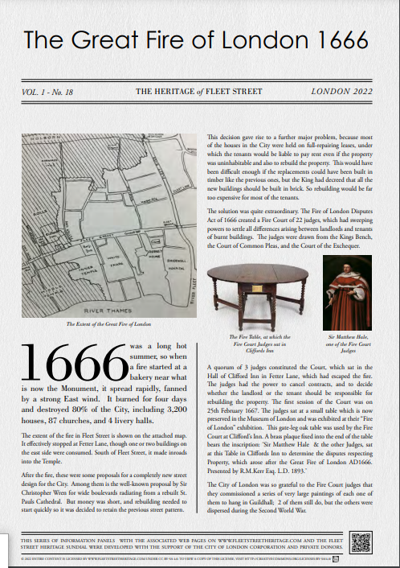
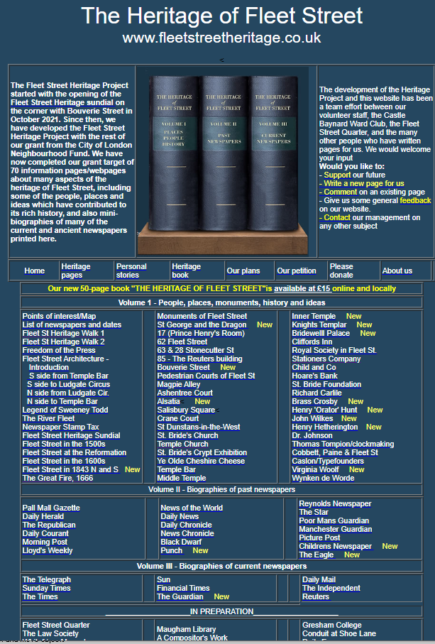
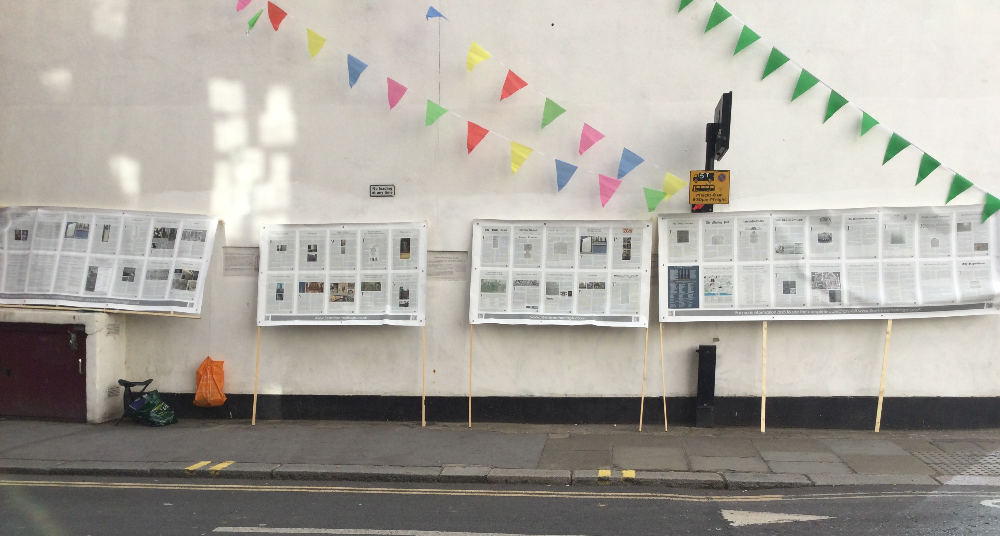
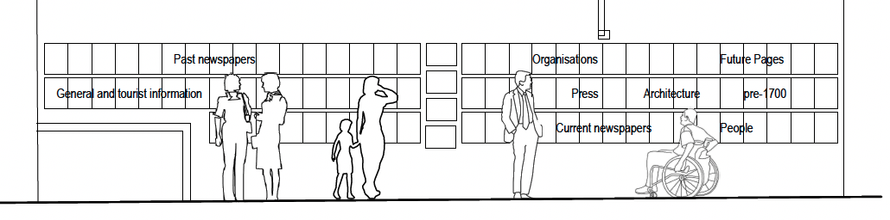

|
Fleet Street Heritage Wall - Timeline
The proposed Heritage Wall
is the third part of the Fleet Street Heritage Project, which comprises
the Heritage Sundial (completed in 2021), the 70 Heritage Panels completed
in 2023 (all of which also appear on the fleetstreetheritge.co.uk website
and the Heritage Wall consisting of 80 ceramic panels placed at the
foot of the sundial wall.
Each of these 3 parts is designed to
publicise the wide range of heritage in the Fleet Street area, aand
to enable people to find Information about items of interest to them

|

> |
 |
| The Fleet Street Heritage Sundial
at 9.30 a.m (shadow across top masthead) . The sundial is east-facing
so only tells the mornig hours |
This is 1 of the 85 Heritage Information
panelsslike this on a wide variety of subjects. They are all available
on our website as printable pdfs |
The home page of the www.fleetstreetheritage.co.uk
website iin August 2024, with direct links to all the 85 pages we
have now completed |
|
|
For the Open House in September
2023, we had an exhibition of 56 of our Heritage Panels under
the sundial.
They were mounted on flimsy wooden
structures to avoid the need for planning permission, and they
gave a good impression of what the proposed Heritage Wall would
look like. This Open House event was popular, those who came liked
the wealth of information available, and many spent some time
looking at a number of pages, andothers came back to look again
later. 170 of them signed a petition asking the City of London
to do all it could to establish a permanent Heritage Wall of ceeramic
panels on this site, and a further 760 signed the later online
petition.

|
|
In January 2024, we were ready
to submit the planning application for the Heritage Wall. There
is £640submission fee, and our company, the Fleet Street
Heritage CIC had spent all our City of London Neighbourhood Fund
grant. But fortunately the Fleet Street Quarter Business Improvement
District had offered to pay this on our behalf. . We decided to
delay the applicatin until we could table the project at a meeting
of the Culture, Heritage and Libraries Comittee of the City. Thhy
accepted our petition, but recomended that we should get in touch
with the newly-established City Arts Initiative This proposal
rfor all 84 of the Heritage Panels to be displayed on A3 ceramic
panels is shown below.
To us, it seemed a logical companion
to the sundial which trumpted out the fact that Fleet Street has
a centuries old connection with the newspaper industry. The Heritage
Wall fills in some of the detail. We did not envisage that people
would read allthe panelsl, but that theywould read the headings
of the pages, some would follow the QR codes to see the pages
on their phones, ipads or laptops, and many too would listen t
the audio version when these are posted lateer in the year. And
everybody would appreciate that here was a very large and easily
accessible source of information about this isconic area, which
they could revisit on the internet whenever they wished
,.

|
|
It was June 2024 before we were
able to have detailed meeting with two officers of the CAI. They
expressed the view that the proposal was not attractive enough,
that the lettereing was too small, and that it did not conform
to their accessibility guidelines. We pointed out that our Open
House exhibit had attracted a very diverse audience, and evereyone
seemed to like it. They said that to get planning permission we
needed to put up a proposal which was much more attractive, and
only referred to the individual Heritage Pages by their title
and a one-line description. We did not agree with this concept,
but felt that we had to show willing, so we put up 4 diffeerent
proposla which met these specifications. These are shown in our
FSHPresentation7.pptx which was sent to the CAI officers, who
kindly submitted it to the full meeting of the CAI Committee,
which we understand was attended by a number of Chief Officers
and represntatives from English Heritage and other organisations.
We were sent a summary of the
comments from this meeting whcih were almost entirely negative
about all 4 of the schemeso. We were left feeling there was nothing
obvious we could do to get the planningpermission we needed for
the scheme, so the idea would probably lapse, and the Heritage
Wall would just be an imaginative idea and a wasted opportunity
to use this marvellous site under the sundial.
PN 1 September 2024
|
|
|